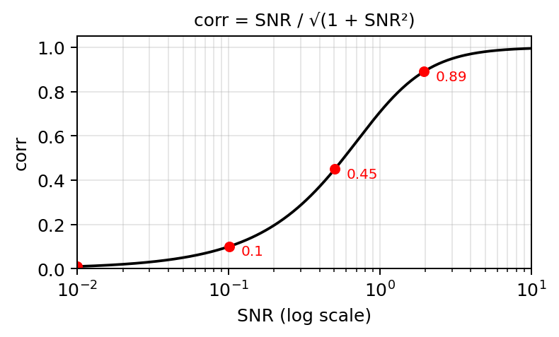

MaxRL Statistics
Placeholder summary of research progress.
Regression: bag of words
The bag-of-words (BoW) setup isolates noise-robustness of SL, REINFORCE, GRPO, and MaxRL in a zero-step rollout setting: the model sees a single prompt and predicts a scalar target, with no sequential reasoning.
Dataset
See src/data/bag_of_words.py.
Each prompt is \(L\) words sampled iid from a mixture of semantic words, which carries signal, and auxiliary words, which are pure fillers. The target is a noise-corrupted linear function of word content, parameterized by \(\rho \in (0, 1]\), the correlation between signal and target.
7-word vocabulary. Semantic words map to integer values centered at zero:
| grim | bad | poor | fair | good | great | perfect |
|---|---|---|---|---|---|---|
| \(-3\) | \(-2\) | \(-1\) | \(0\) | \(+1\) | \(+2\) | \(+3\) |
The 256 auxiliary words (common function words: the, a, and, if, because, …) carry value 0.
Sampling distribution. Semantic words share mass \(1 - \alpha\) (where \(\alpha\) = aux_words_ratio), shaped by a power-law centered on the neutral word “fair”: \(p_i \propto (1 + |i - \text{center}|)^{-\gamma}\). Auxiliary words uniformly split mass \(\alpha\).

Target generation. Let \(\rho = \text{SNR}/\sqrt{1 + \text{SNR}^2}\). Given a prompt of length \(L\): \[ \text{signal} = \frac{\rho}{\sqrt{L}\,\sigma} \sum_{i=1}^L v_i, \qquad \text{target} = \text{signal} + \mathcal{N}(0, \sqrt{1 - \rho^2}) \] where \(\sigma\) is the per-token standard deviation under the full mixture (per-token mean is zero by symmetry). By construction \(\text{Var}(\text{target}) = 1\) and \(\text{corr}(\text{signal}, \text{target}) = \rho\):

Example prompts (\(L=16\), \(\sigma = 1.14\), so \(\sqrt{L}\,\sigma = 4.54\)):
\(\rho = 0.01\) (SNR = 0.01) — multiplier \(\rho / (\sqrt{L}\,\sigma) = 0.0022\):
fair good perfect fair poor perfect fair because great of as fair of in good fair\(\sum v_i = +9\), signal \(= 0.0022 \times 9 = 0.020\), target \(= 0.699\) (almost pure noise)
\(\rho = 0.45\) (SNR = 0.5) — multiplier \(= 0.098\):
poor grim bad at perfect poor the poor as great good fair then good bad poor\(\sum v_i = -4\), signal \(= 0.098 \times (-4) = -0.394\), target \(= -1.204\)
\(\rho = 0.89\) (SNR = 2.0) — multiplier \(= 0.197\):
but grim some perfect from bad perfect perfect that or perfect fair good the great grim\(\sum v_i = +7\), signal \(= 0.197 \times 7 = 1.378\), target \(= 1.308\) (target tracks signal)
Supervised-learning benchmark
REINFORCE / GRPO
MaxRL
Regression: DAG-reasoning
The next DAG-reasoning setup isolates the reasoning advantage and rollout efficiency of the compared methods.